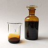

biogenic

Definition: A biogenic substance is a product made by or of life forms. While the term originally was specific to metabolite compounds that had toxic effects on other organisms, it has developed to encompass any constituents, secretions, and metabolites of plants or animals. In context of molecular biology, biogenic substances are referred to as biomolecules. They are generally isolated and measured through the use of chromatography and mass spectrometry techniques. Additionally, the transformation and exchange of biogenic substances can by modelled in the environment, particularly their transport in waterways.
Source: Wikipedia
Wikipedia Page (Something wrong with this association? Let us know.)
Wikidata Page (Something wrong with this association? Let us know.)
Occurs in: